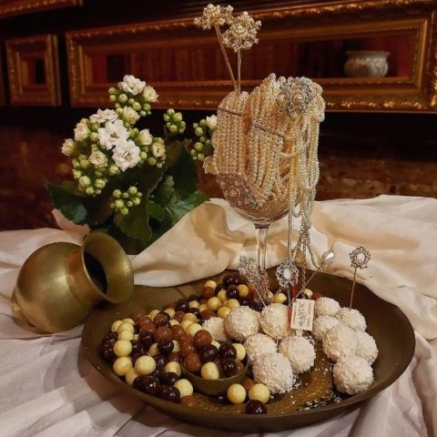
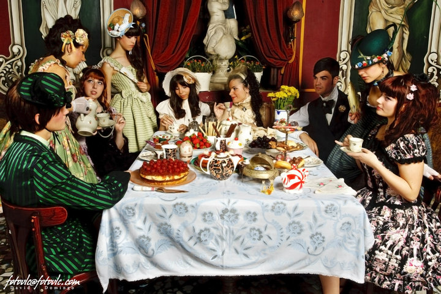

Desayunos
-
Desayuno de la Casa - 4,50€
House Breakfast
- Café/Té* & 1 Tostada (a elegir)
- Mantequilla
- Mermelada
- Aceite de Oliva & Tomate
- Con Zumo de Naranja Natural Pequeño - 6,50€
- Tostadas - 3,50€
- Alérgenos: Gluten
- Mermelada/Mantequilla
- Aceite De Oliva
- Tomate
- Nuestros Favoritos - 4,50€
- Jamón & Tomate
- Queso con Tomate
- Queso & Membrillo
- Jamón & Tomate & Queso - 5,00€
- Anchoas & Tomate & Queso - 5,00€
- Croissant - 2,50€
- Alérgenos: Cereales con Gluten, Huevo
- Zumo:
- Zumo Natural de Naranja
- Pequeño - 3,50€
- Grande - 4,00€
- Oferta Válida de 10:00h a 12:00h
- *Suplemento de 1,50€ en Tés Especiales
- Batidos - 5,00€
- Milkshake - Plátano, Jengibre, Canela, Avellana, Cúrcuma & Leche de Soja
- Cereales - 5,00€
- Cereales, Muesli, Plátano, Manzana,Yogurt, Leche de Soja, Cúrcuma & Semillas Variadas
- Desayuno Gaia - 12,50€
- Café/Té (Un sabor de tu elección)
- Tostada de Jamón & Queso
- Bizcocho de Zanahoria, Canela & Jengibre
- Zumo Natural de Naranja
- Desayuno Ceres - 10,00€
- Café/Té (Un sabor de tu elección)
- Cereales, Muesli, Yogurt, Leche de Soja, Dátil, Semillas Variadas, Plátano & Manzana
- Zumo Natural de Naranja

Tartas & Cafés
- Nuestras Tartas / Our Cakes - 4,50€
- Tarta de Chocolate al Ron - Alérgenos: Cereales con Gluten, Lácteos, Huevo
- Tarta de Queso con Mermelada de Fruta - Alérgenos: Cereales con Gluten, Lácteos, Huevo
- Tarta de Calabaza & Chocolate Blanco con Almendras - Alérgenos: Cereales con Gluten, Lácteos, Frutos Secos, Huevo
- Bizcocho de Zanahoria, Canela & Jengibre - Alérgenos: Cereales con Gluten, Lácteos, Frutos Secos, Huevo
- Cafés
- Café sólo/ Cortado/ Bombón - 2,00€
- Café con leche/ Cola-Cao con leche - 2,50€
- Carajillo de Licor - 2,50€
- Cafés Aromatizados
Café y Tapas
- Café Avellana - 2,50€
- Café Grand Marnier - 2,50€
- Café Exótico - 2,50€
- Café Vienés - 2,50€ (Nata Montada & Canela)
- Cappuccino - 2,50€
- Coctelería de Café - 4,50€
-
Cafés Calientes
- Fidji (Licor de Coco, Nata, Nuez Moscada)
- San Petersburgo (Vodka, Khalúa, Nata, Canela)
- Irlandés (Whisky, Nata, Canela)
- Praga (Brandy, Cacao, Vainilla)
Cafés Fríos
- Café De Las Horas (Helado de Vainilla, Khalúa)
- Victoriano (Whisky, Nata, Cacao)
- Antillas (Tia María, Leche Evaporada, Nuez Moscada)
- Martinique (Cointreau, Chocolate, Naranja)
- Barbados (Tia María, Ron Añejo, Limón)

Tés Verdes - 3,50€
- Earl Grey
- Ginseng
- Jazmín
- Formosa Oolong
- Naranja
- Té Rojo - 3,50€
- Té Blanco - 3,50€
- Especialidades de Té - 3,50€
- Maharajah (Té Negro con Especias Orientales & Leche)
- Rooibos
- Rooibos Buenas Noches (Mezcla de Aromas Relajantes)
- Rooibos Lima Limón
- Tés Fríos - 3,50€
- Especiado (Té Negro con Canela, Clavo, Naranja & Limón)
- Té de Rosas con Leche
- INFUSIONES FRÍAS
- Frutas & Flores con Especias
- Mediterráneo (Mezcla de Hierbas Arómaticas con Limón)
- Infusiones
- Tradicionales - 2,50€
- Especialidades - 3,50€
- Salvia
- Tomillo
- Hibisco & Manzana
- Frutas del Bosque
- Papaya & Mandarina
- Frutas con Especias